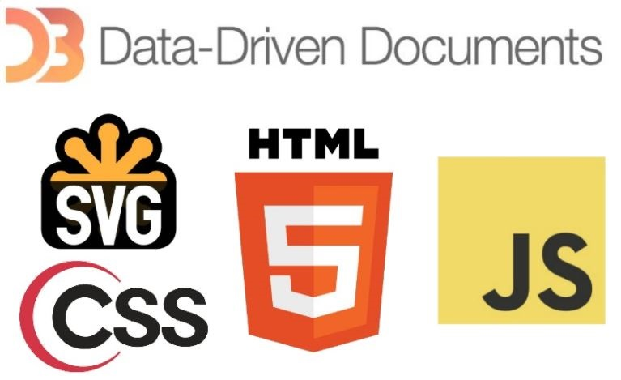
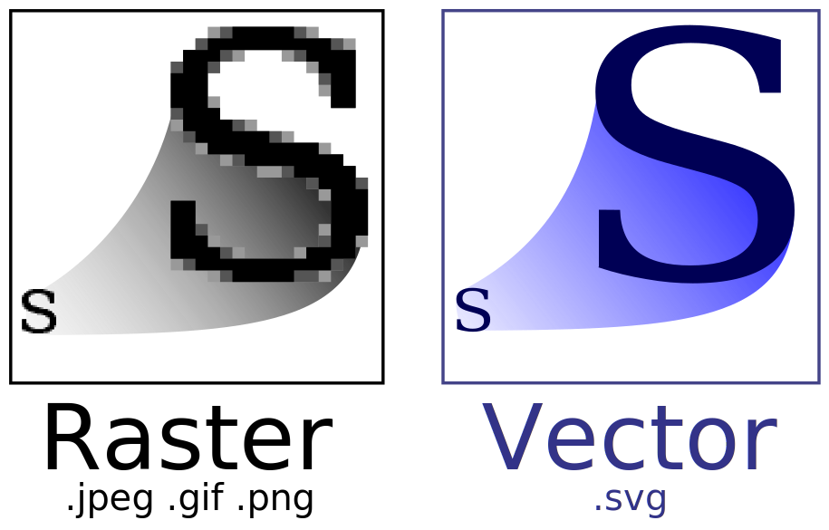

In deze lesbrief gaan we de basics van D3 behandelen. Maar eerst laten we voortaan altijd aan het begin van de lesbrief een visualisatie zien, om de mogelijkheden van D3 te illustreren! Hier over zie je bijvoorbeeld een spelletje die gemaakt is, enkel met D3!
D3 is een mix van verschillende elementen (zie het plaatje hier onder). De meeste ken je al, maar een paar zullen waarschijnlijk nog onbekend voor je zijn. HTML, en CSS zijn al bekend van de modules "HTML CSS-0 en 1" en JavaScript van de JavaScript voor web modules. Dus daar zal niet zo heel diep verder meer op ingegaan worden. SVG is verder nog onbekend dus daar zullen we nu even wat verder op uitbreiden.
Om te beginnen staat SVG voor Scalable Vector Graphics. Dit is een bestandsformat zoals .jpg, .png of .gif, maar dan met een bijzondere eigenschap! Het is namelijk zo dat de voorgaande soorten plaatjes gebaseerd zijn op pixels, terwijl een SVG gebaseerd is op verhoudingen. Dit is speciaal ontwikkeld voor interactiviteit en animatie. Doordat de plaatjes gemaakt zijn d.m.v. verhoudingen kunnen we bijvoorbeeld een plaatje vergroten zonder dat je die lelijke pixelachtige hoekjes zal zien! Het plaatje hier onder van wikipedia illustreert dat heel goed.
Zoals je ziet in het plaatje hier boven is de S links gebaseerd op pixels, en wordt daarom erg vaag en hoekig op het moment dat we het vergroten. MAAR! Het plaatje rechts blijft mooi glad en ziet er precies hetzelfde uit als de kleine S, maar dan groter. Dat is dus de magie van SVG!
Maar dat is niet het enige mooie aan het SVG format. Het wordt namelijk geschreven in een XML text file. Dit betekend dat we binnen het plaatje kunnen zoeken, indexen en scriptjes kunnen schrijven om het aan te passen. Dit is een beetje het moment dat we D3 erbij gaan halen. Want laat het nou net zo zijn dat D3 zich perfect leent voor SVG manipulatie. Je kunt hiermee gemakkelijk in de browser SVG elementen selecteren, maar ook heel simpel zelf maken! In het vervolg van de lesbrief gaan we kijken hoe dit in zijn werking gaat door een SVG plaatje in te laden en te manipuleren. Vervolgens gaan we zelf een plaatje maken!
In dit gedeelte gaan we een SVG inladen en vervolgens d.m.v. JavaScript inkleuren. We gaan namelijk een creeper van minecraft inladen! Maar voordat we dit kunnen d.m.v. D3 moeten we wel eerst de library inladen van D3 in onze HTML, en een local host maken. Voor het inladen van D3 beginnen we met een Lege HTML en moeten we twee JavaScript scripts inlezen, namelijk de D3 library en je eigen JavaScript code!
<!DOCTYPE html>
<!-- Zoals altijd beginnen we met een HTML pagina -->
<html>
<head>
<title>D3 inladen, voorbeeld</title>
<!-- Hier laden we D3 in via het internet. Zet in te laden libraries altijd in de head! -->
<!-- We laden libraries hier, omdat de head altijd eerst geladen wordt en dan de body. -->
<script src="https://d3js.org/d3.v3.min.js" charset="utf-8"></script>
<!-- En natuurlijk je JavaScript code extern inladen! -->
<script src="js/mijn_code.js" charset="utf-8"></script>
</head>
<body>
<!-- De div die we straks nodig hebben om onze creeper aan te appenden. -->
<div id="creeper"><div>
</body>
</html>
Nu we D3.js ingeladen hebben, moeten we een local host maken. Dit zodat je je site kan testen (ook offline). Zonder deze localhost kan D3 niet goed functioneren! Als je python goed hebt gedownload op je computer kan je de volgende file aanmaken. server.bat is een executable file die d.m.v. python een local host maakt. Als je dus dubbel klikt op de file opent hij het automatisch! Als de .bat file niet werkt, kan je ook altijd de code plakken in je terminal en het daar runnen.
# Dit simpele stukje code fungeert als een server!
python -m SimpleHTTPServer 8888 &
Als je server.bat in dezelfde map zet als je index.html kan je in je browser gewoon localhost:8888 typen en dan kom je aan bij je site! Dan zijn we nu klaar om verder te gaan.
Hier onder zie je de creeper die we gaan inladen! Als je het element van de svg inspecteert (rechter muisknop op het plaatje en dan inspecteren) dan kan je zien dat het plaatje onderverdeelt is in verschillende elementen met eigen id's. Dit zijn id's als "hoofd", "rechter_oog", "linker_oog" en "mond". Deze kunnen we vervolgens selecteren om de kleur, grootte etc. van te veranderen. Hoe dat inladen precies gaat bekijken we in de code hier onder. Klik hier om naar de SVG file te gaan en dan rechter muisknop, opslaan als, om te downloaden! Zorg dat creeper.svg ook in dezelfde map zit als index.html!
Let wel op dat je D3 goed hebt ingeladen en een local host aan hebt staan!
//Dit stukje code laad het plaatje in.
d3.xml("../images/creeper.svg").mimeType("image/svg+xml").get(function(error, xml) {
//Check of het inladen goed is gegaan.
if (error) throw error;
//Selecteer de div waar we het plaatje in gaan appenden
var creeper = d3.select("#creeper");
//Haal alle "svg" elementen uit het ingeladen plaatje.
var svgNode = xml.getElementsByTagName("svg")[0];
//Plak vervolgens het de SVG in de div.
creeper.node().appendChild(svgNode);
//Pas de width van het plaatje aan om het minder groot te laten zijn.
creeper.style("width", "40%");
});
Nu we het plaatje ingeladen hebben kunnen we verder gaan met het manipuleren van het plaatje. Je weet als het goed is al hoe dit moet door de "JavaScript voor web-1" module! Maar D3.js maakt ons leven iets makkelijker, hoewel het wel net wat andere syntax heeft die je moet leren. Zo laat ik hier onder eerst de JavaScript manier zien, en daarna een D3 manier om de ogen etc te kleuren. let wel, de volgende code moet binnen de d3.xml() { dus de nieuwe code hoort binnen deze haakjes onderaan het stuk van inladen } functie zitten in de vorige code.
//Hoe het werkt in Javascript.
var linker_oog = document.getElementById("linker_oog").style.fill = "red";
//Hoe het werkt in D3.
var mond = d3.select("#mond").style("fill", "red");
Opdracht 1:
Hier onder zie je een minecraft persoon. Klik hier om de SVG te downloaden! Kleur vervolgens d.m.v. D3 de elementen binnen deze SVG. Rechts zie je een ingekleurd voorbeeld, links is de te downloaden SVG. Tip: Gebruik voor de lichaamsdelen en kleuren een array, en loop hierdoor om de elementen te kleuren.
Opdracht 2:
Hier onder zie je een wereldkaart. Klik hier om de SVG te downloaden! Zoals je ziet zijn alle landen saai en grijs! Kijk naar de ID's van de landen (element inspecteren weet je nog?!) en verander van minstens 10 landen de kleuren. Welke mag je zelf weten. Verder moet je nog minstens één extra attribuut veranderen. Denk hierbij aan opacity (doorzichtigheid), stroke-width (dikte van lijnen), stroke (kleur van de lijnen) etc. Tip: Hier vind je een hele lijst van alle attributes die je op een SVG kan toepassen. Kijk er maar doorheen en kies er een uit!